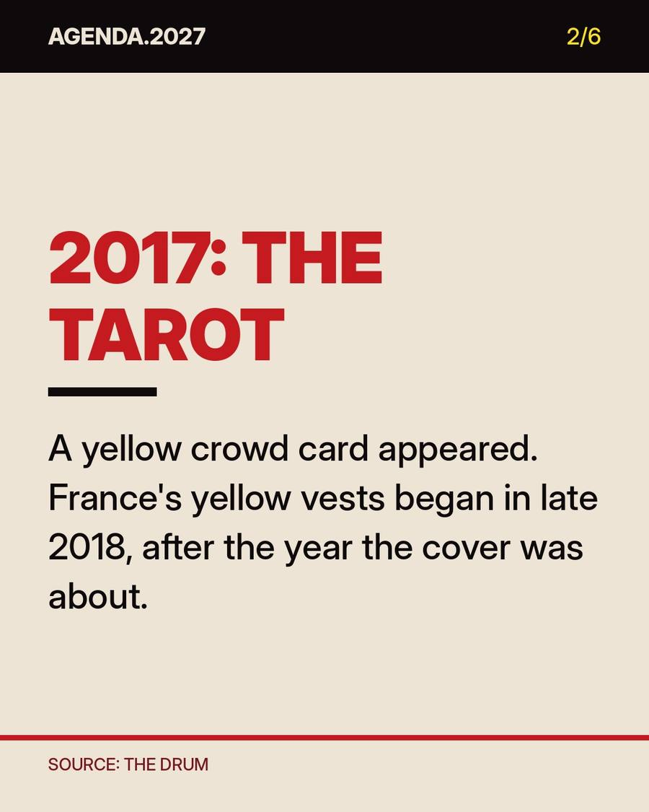
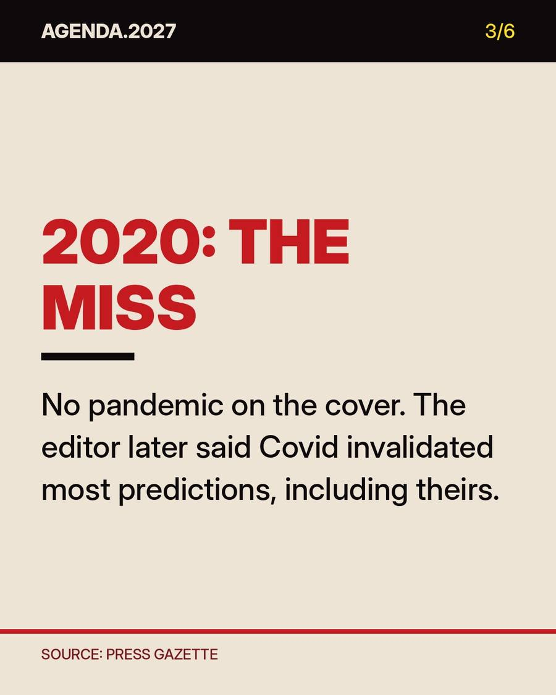
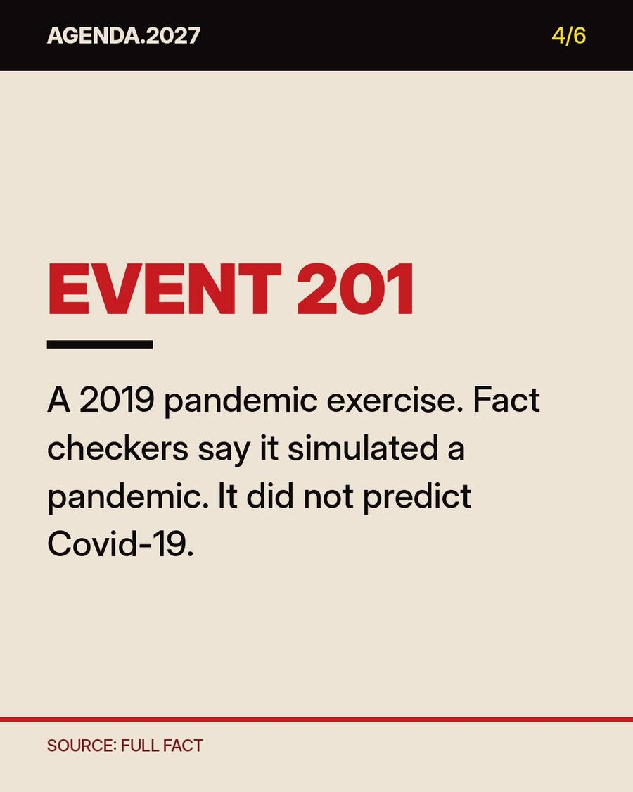
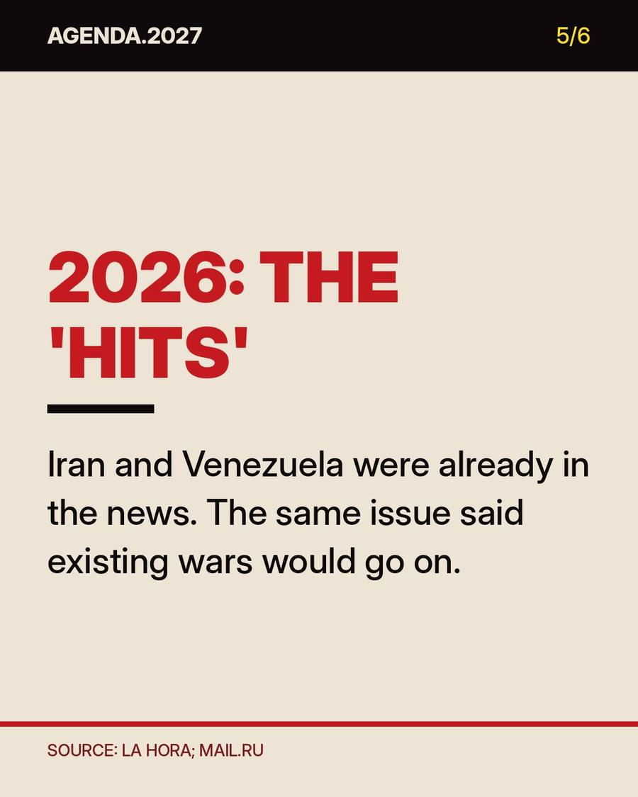

Does the cover predict the future?
THEORY: this post discusses speculation. Each claim is marked as fact or theory, and we say where the theory breaks.






In text
2017: the tarot
A yellow crowd card appeared. France's yellow vests began in late 2018, after the year the cover was about.
2020: the miss
No pandemic on the cover. The editor later said Covid invalidated most predictions, including theirs.
Event 201
A 2019 pandemic exercise. Fact checkers say it simulated a pandemic. It did not predict Covid-19.
2026: the 'hits'
Iran and Venezuela were already in the news. The same issue said existing wars would go on.
Sources
- The Drum
- Press Gazette
- Full Fact
- La Hora
- Mail.ru
Prediction or just the news? Tell us in the comments on Instagram.
Follow @agenda2027.daily